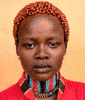
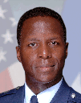
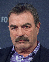
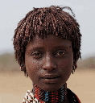
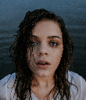
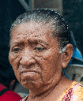
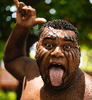
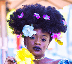

Image and ancillary data from the NPRportrait Benchmark described in the paper below can be downloaded.
P.L. Rosin, Y.-K. Lai, D. Mould, R. Yi, I. Berger, L. Doyle, S. Lee, C. Li, Y.-J. Liu, A. Semmo, A. Shamir, M. Son, and H. Winnemöller, "NPRportrait 1.0: A three-level benchmark for non-photorealistic rendering of portraits", Computational Visual Media, vol. 8, pp 445–465, 2022. Post-print|DOI: 10.1007/s41095-021-0255-3
New in 2023: Julian Bültemeier (Institute Industrial IT, Technische Hochschule Ostwestfalen-Lippe) has manually created segmentation masks for all the NPRportrait 1.0 Benchmark images using the following region categories: skin, clothing, eyeballs, nose, ears, hair, eyebrows, facial hair, lips, teeth, mouth cavity, accessories, headgear, glasses.
Thumbnails for the level 1 images from the above paper are shown below, and the (full resolution) set is zipped up for downloading here.


Thumbnails for the level 2 images from the above paper are shown below, and the (full resolution) set is zipped up for downloading here.




Thumbnails for the level 3 images from the above paper are shown below, and the (full resolution) set is zipped up for downloading here.
 Individual images should be attributed to the original photographers.
Photo credits for level 1:
1. Nuclear Regulatory Commission (Wikimedia) Creative Commons Attribution 2.0 Generic license,
2. Rod Waddington (Flickr) Attribution-ShareAlike 2.0 Generic (CC BY-SA 2.0),
3. Paul Rosin (no copyright),
4. Paul Rosin (no copyright),
5. United States Air Force (Wikimedia) public domain in the United States,
6. Kaydiddy35 (Wikimedia) Creative Commons Attribution-Share Alike 3.0 Unported license,
7. Charles Mims (Flickr) Attribution 2.0 Generic (CC BY 2.0),
8. Moid Rasheedi (Wikimedia) Creative Commons CC0 1.0 Universal Public Domain Dedication,
9. Rahman Uddin (Wikimedia) Creative Commons Attribution-Share Alike 4.0 International licence,
10. Paul Attick (Wikimedia) Creative Commons Attribution-Share Alike 4.0 International licence,
11. Department of Foreign Affairs and Trade (Wikimedia) Creative Commons Attribution 3.0 Australia,
12. UC Davis College of Engineering Attribution 2.0 Generic (CC BY 2.0) (Flickr),
13. icannphotos (Flickr) Attribution-ShareAlike 2.0 Generic licence,
14. Paul Rosin (no copyright),
15. MARRON1119 (Wikimedia) Creative Commons Attribution-Share Alike 4.0 International licence,
16. Choi Kwang-mo (Wikimedia) Creative Commons Attribution-Share Alike 4.0 International license,
17. Fred Bchx (Flickr) Attribution 2.0 Generic,
18. Iolo Penri (Wikimedia) Creative Commons Attribution-Share Alike 4.0 International license,
19. Zboralski (Wikimedia) Creative Commons Attribution-Share Alike 3.0 Unported license,
20. Julia Miele (Flickr) Attribution 2.0 Generic (CC BY 2.0).
Photo credits for level 2:
1. Sgt. Matthew Callahan (Wikimedia) public domain,
2. BBC World Service (Flickr) Attribution-NonCommercial 2.0 Generic (CC BY-NC 2.0) but use granted by author for NPRportrait,
3. Rod Waddington (Flickr) Attribution-ShareAlike 2.0 Generic (CC BY-SA 2.0),
4. Adam McGuffie (Flickr) Attribution 2.0 Generic,
5. Dominick D (Wikimedia) Creative Commons Attribution-Share Alike 2.0 Generic license,
6. www.j-pics.info (Flickr) Attribution-NonCommercial-ShareAlike 2.0 Generic (CC BY-NC-SA 2.0) but use granted by author for NPRportrait,
7. certified su (Flickr) Attribution 2.0 Generic,
8. Nando.uy (Flickr) Attribution-NonCommercial-ShareAlike 2.0 Generic (CC BY-NC-SA 2.0) but use granted by author for NPRportrait,
9. Christopher Blizzard (Flickr) Attribution-ShareAlike 2.0 Generic (CC BY-SA 2.0),
10. Andrew Braithwaite (Flickr) Attribution 2.0 Generic (CC BY 2.0),
11. y5RZouZwNsH6MI (Flickr) Attribution-ShareAlike 2.0 Generic (CC BY-SA 2.0),
12. shankar s. (Flickr) Attribution 2.0 Generic (CC BY 2.0),
13. Noah Buscher (Unsplash),
14. Sparky (Flickr) Attribution-NonCommercial 2.0 Generic (CC BY-NC 2.0) but use granted by author for NPRportrait,
15. unknown (Pexels),
16. Martin Sharman (Flickr) Attribution-NonCommercial-ShareAlike 2.0 Generic (CC BY-NC-SA 2.0) but use granted by author for NPRportrait,
17. Wilfredor (Wikimedia) Creative Commons CC0 1.0 Universal Public Domain Dedication,
18. Einar Aslaksen (Wikimedia) Creative Commons Attribution 2.0 Generic license,
19. Hamish Irvine (Flickr) Attribution-NonCommercial 2.0 Generic (CC BY-NC 2.0) but use granted by author for NPRportrait,
20. Greg Peverill-Conti (Flickr) Attribution-NonCommercial-ShareAlike 2.0 Generic (CC BY-NC-SA 2.0) but use granted by author for NPRportrait.
Photo credits for level 3:
1. Johanna Buguet (Unsplash),
2. Commander, U.S. Naval Forces Europe-Africa/U.S. 6th Fleet (Flickr) public domain,
3. Felipe Sagn (Unsplash),
4. Nathan Dumlao (Unsplash),
5. Old Youth (Unsplash),
6. Olesya Yemets (Unsplash),
7. Azamat Zhanisov (Unsplash),
8. Claudia (Unsplash),
9. Lachlan Hardy (Flickr) Attribution 2.0 Generic (CC BY 2.0),
10. Calvin Lupiya (Unsplash),
11. Artyom Kim (Unsplash),
12. Jordan Bauer (Unsplash),
13. Alex Iby (Unsplash),
14. Andrew Robinson (Unsplash),
15. David in Lisburn (Flickr) Attribution 2.0 Generic (CC BY 2.0),
16. Gabriel Silv ́erio (Unsplash),
17. Lachlan Hardy (Flickr) Attribution 2.0 Generic (CC BY 2.0),
18. Michael Vadon (Flickr) Attribution-ShareAlike 2.0 Generic (CC BY-SA 2.0),
19. Orin Zebest (Flickr) Attribution 2.0 Generic (CC BY 2.0),
20. irumge (Flickr) Attribution 2.0 Generic (CC BY 2.0).